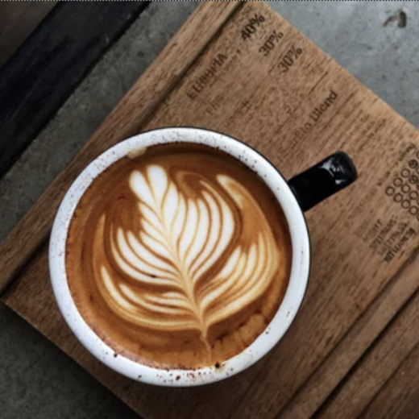

Winter Hot Treats
Santa's Latte

Key Ingredients
- ☕ Espresso (1 shot, or 1/3 cup strong brewed coffee)
- 🥛 Steamed milk (3/4 cup)
- 🍥 Ground cinnamon (1/2 tsp)
- 🎄 Brown sugar (1 tsp)
Equipment
- Espresso machine or coffee maker
- Milk frother or saucepan
Quick Guide
- Brew your espresso or strong coffee and pour it into a mug.
- Heat and froth the milk in a saucepan or with a frother.
- Stir cinnamon and brown sugar into the milk.
- Pour the spiced milk over the espresso.
- Sprinkle a pinch of cinnamon on top for a festive touch.